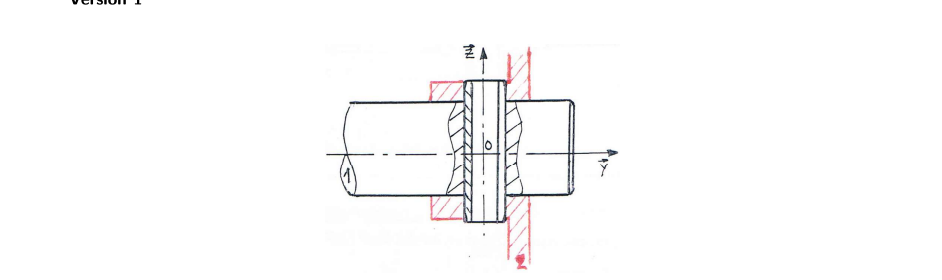
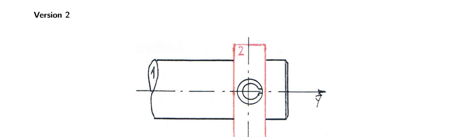

Accouplement par goupille — arbre / poulie
Résumé de cours annoté (pour présentation) + correction complète et détaillée de l'application « Accouplement par goupille » (2 versions). Objectif : déterminer, à partir d'un graphe des liaisons, la liaison équivalente entre l'arbre et la poulie, et juger si le montage est isostatique — en tenant compte du rotulage volontaire introduit pour éviter l'hyperstatisme. Source : CM de SI (photo transmise le 2026-09-21).
1. Résumé de cours annoté
Les points marqués ★ important sont ceux à mettre en avant à l'oral : ce sont eux qui font tourner tout l'exercice.
1.1 Torseur cinématique / torseur des actions transmissibles
1.2 Liaisons usuelles utilisées dans cet exercice
| Liaison | DDL | Torseur cinématique en \(O\) | Torseur d'effort en \(O\) |
|---|---|---|---|
| Pivot glissant d'axe \((O,\vec x)\) | 2 : \(R_x,T_x\) | \(\{\omega_x\vec x;\ v_x\vec x\}_O\) | \(\{Y\vec y+Z\vec z;\ M\vec y+N\vec z\}_O\) |
| Sphère-cylindre (linéaire annulaire) d'axe \((O,\vec x)\) | 4 : \(R_x,R_y,R_z,T_x\) | \(\{\vec\Omega;\ v_x\vec x\}_O\) | \(\{Y\vec y+Z\vec z;\ \vec0\}_O\) |
| Sphérique (rotule) de centre \(O\) | 3 : \(R_x,R_y,R_z\) | \(\{\vec\Omega;\ \vec0\}_O\) | \(\{X\vec x+Y\vec y+Z\vec z;\ \vec0\}_O\) |
| Pivot d'axe \((O,\vec x)\) | 1 : \(R_x\) | \(\{\omega_x\vec x;\ \vec0\}_O\) | \(\{Y\vec y+Z\vec z;\ M\vec y+N\vec z\}_O\) |
| Encastrement | 0 | \(\{\vec0;\ \vec0\}_O\) | \(\{X\vec x+Y\vec y+Z\vec z;\ L\vec x+M\vec y+N\vec z\}_O\) |
1.3 Modéliser un contact cylindrique réel (goupille)
- \(L\gtrsim D\) (contact « long ») → le contact résiste aux moments transversaux → pivot glissant (bloque les 2 rotations perpendiculaires à l'axe).
- \(L\ll D\) (contact « court ») → le contact ne peut pas résister au basculement → on dégrade en sphère-cylindre (les rotations perpendiculaires à l'axe redeviennent libres).
1.4 Éviter l'hyperstatisme : le rotulage volontaire
1.5 Association de liaisons — série et parallèle
Parallèle (\(n\) liaisons entre les mêmes 2 solides, ex. le contact direct 1/2 et la chaîne via 3) : la liaison équivalente doit respecter toutes les liaisons à la fois → on prend l'intersection des torseurs cinématiques (les mouvements communs seulement).
1.6 Isostatisme d'une association
2. Application — Version 1 (poulie large, largeur 22)

Trois solides, deux chemins entre 1 et 2 : le contact direct arbre/poulie (liaison 1/2), et la chaîne via la goupille (liaisons 1/3 puis 3/2). Ces deux chemins sont en parallèle entre 1 et 2.
Analyse du contact
Ce contact cylindrique n'a pas de fonction de verrouillage : c'est la goupille qui bloque la rotation. Pour éviter l'hyperstatisme (§1.4 — principe du rotulage volontaire, comme pour un montage à deux roulements), on le modélise avec du jeu de rotulage → liaison sphérique (rotule) de centre \(O\).
Analyse du contact
La goupille traverse toute la largeur de la poulie : longueur de contact \(L=22\) pour un diamètre de goupille \(D=8\) : \(L\gg D\) (contact très long) → liaison pivot glissant d'axe \((O,\vec z)\) (l'axe de la goupille) : c'est un des deux guidages « fermes » qui verrouillent la rotation.
Analyse du contact
Le trou diamétral de la goupille traverse l'arbre sur toute son épaisseur : longueur de contact \(L=20\) (le diamètre de l'arbre) pour un diamètre de goupille \(D=8\) : \(L\gg D\) → à nouveau une liaison pivot glissant d'axe \((O,\vec z)\), le second guidage ferme de la goupille.
Étape 1 — composer la chaîne \(1\!-\!3\!-\!2\) (série → somme)
\(\mathscr L_{1/3}\) et \(\mathscr L_{3/2}\) sont deux pivots glissants du même axe \((O,\vec z)\). Leur somme ne fait qu'un : la chaîne équivaut, entre 1 et 2, à un pivot glissant d'axe \((O,\vec z)\) (2 DDL libres : \(R_z,T_z\) ; tout le reste bloqué : \(R_x,R_y,T_x,T_y\)).
Étape 2 — combiner avec le contact direct rotulé (parallèle → intersection)
Le contact direct \(\mathscr L_{1/2}\) (rotule) laisse libres \(R_x,R_y,R_z\) et bloque \(T_x,T_y,T_z\). La chaîne laisse libres \(R_z,T_z\) et bloque \(R_x,R_y,T_x,T_y\). Composante par composante :
- \(R_x\) : libre côté rotule, bloqué côté chaîne → l'intersection bloque.
- \(R_y\) : libre côté rotule, bloqué côté chaîne → l'intersection bloque.
- \(R_z\) : libre des deux côtés → reste libre.
- \(T_x,T_y\) : bloqués des deux côtés → restent bloqués.
- \(T_z\) : bloqué côté rotule, libre côté chaîne → l'intersection bloque.
Somme des composantes d'effort transmissibles des 3 liaisons réelles du graphe (pas de la liaison équivalente) :
\[ N_s = \underbrace{3}_{\mathscr L_{1/2}\ (\text{rotule})}+\underbrace{4}_{\mathscr L_{3/2}}+\underbrace{4}_{\mathscr L_{1/3}}=11 \]3 solides en boucle fermée : \(N_e=6(3-1)=12\).
\[ h=N_s-N_e=11-12=-1 \]3. Application — Version 2 (poulie mince, largeur 10)

Même topologie qu'en Version 1. Le rotulage volontaire du contact direct 1/2 (§1.4) ne dépend pas de la largeur de la poulie : il reste identique. Seule la liaison \(\mathscr L_{3/2}\) change de nature, parce que c'est elle dont la longueur de contact dépend directement de cette largeur.
Analyse du contact
Le rotulage volontaire (§1.4) est un choix de conception indépendant de la largeur de la poulie : il s'applique ici de la même façon qu'en Version 1. Liaison sphérique (rotule) de centre \(O\).
Analyse du contact
La goupille (Ø8) ne traverse plus que l'épaisseur mince de la poulie, \(L=10\) : \(L\) n'est plus nettement supérieur à \(D=8\) (engagement court, presque un simple « anneau » de contact) → le contact ne peut plus résister au basculement → liaison sphère-cylindre (linéaire annulaire) d'axe \((O,\vec z)\).
Analyse du contact
L'arbre n'a pas changé de dimension entre les deux versions : longueur de contact \(L=20\) pour \(D=8\), toujours \(L\gg D\) → liaison pivot glissant d'axe \((O,\vec z)\), identique à la Version 1.
Étape 1 — composer la chaîne \(1\!-\!3\!-\!2\) (série → somme)
\(\mathscr L_{1/3}\) (pivot glissant \(z\) : libère \(R_z,T_z\)) et \(\mathscr L_{3/2}\) (sphère-cylindre \(z\) : libère \(R_x,R_y,R_z,T_z\)) : en série, une composante reste libre dès qu'une des deux la libère. Le pivot glissant ne libère rien que la sphère-cylindre ne libère déjà → la somme est la plus permissive des deux : sphère-cylindre d'axe \((O,\vec z)\) (4 DDL libres : \(R_x,R_y,R_z,T_z\)).
Étape 2 — combiner avec le contact direct rotulé (parallèle → intersection)
Contact direct \(\mathscr L_{1/2}\) (rotule) libère \(R_x,R_y,R_z\). Chaîne libère \(R_x,R_y,R_z,T_z\). Composante par composante :
- \(R_x\) : libre des deux côtés → reste libre.
- \(R_y\) : libre des deux côtés → reste libre.
- \(R_z\) : libre des deux côtés → reste libre.
- \(T_x,T_y\) : bloqués des deux côtés → restent bloqués.
- \(T_z\) : bloqué côté rotule, libre côté chaîne → l'intersection bloque.
4. Conclusion — quelle association privilégier en construction ?
| Version 1 (poulie large, 22) | Version 2 (poulie mince, 10) | |
|---|---|---|
| Liaison \(\mathscr L_{3/2}\) (goupille/poulie) | Pivot glissant (contact long) | Sphère-cylindre (contact court) |
| Liaison équivalente 1/2 | Pivot d'axe \((O,\vec z)\), 1 DDL résiduel | Sphérique/rotule, 3 DDL |
| Degré d'hyperstatisme | \(h=-1\) (quasi-isostatique) | \(h=-3\) (sous-contraint) |
| Transmet le couple (\(R_y\) bloquée) ? | Oui | Non : la poulie peut tourner sur l'arbre |